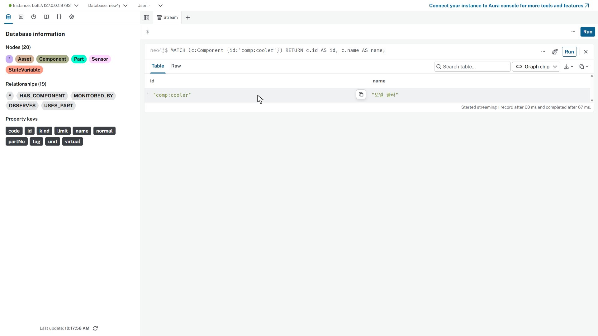
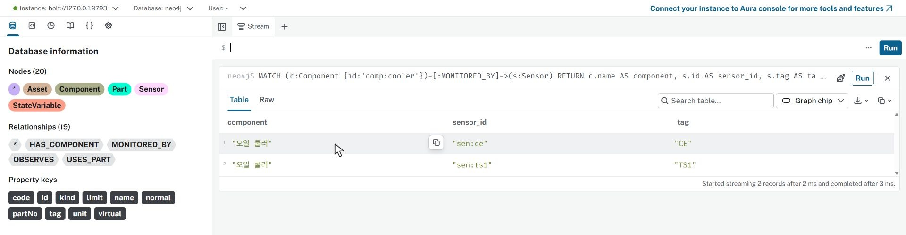
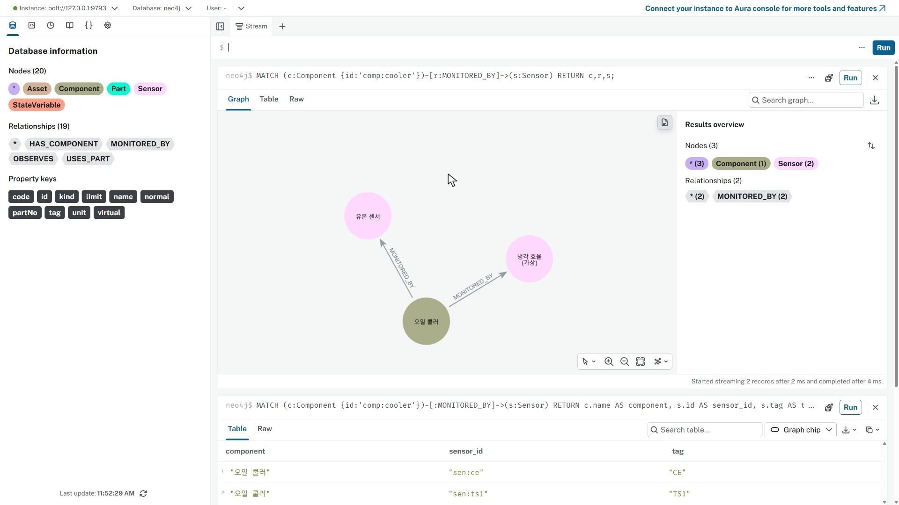
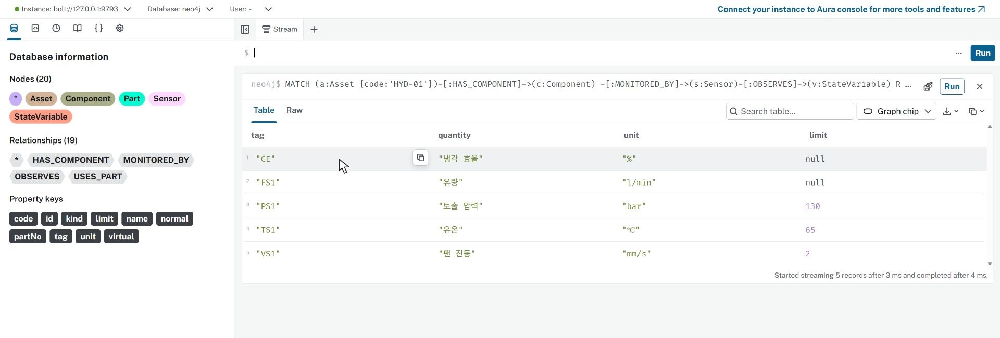
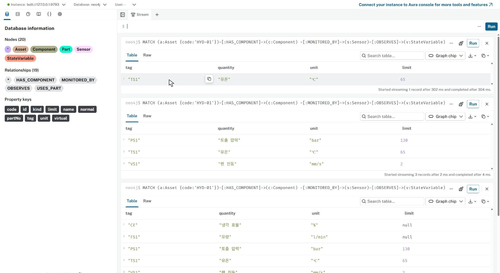
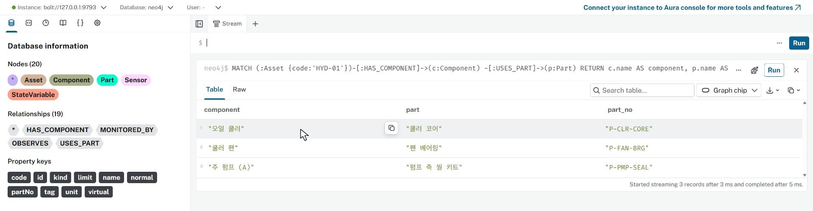
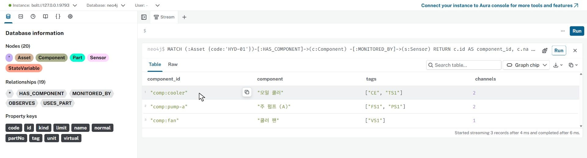

HYD · 실습 가이드관계를 따라 센서와 부품 조회하기
연결된 대상을 확인하고, 결과의 근거를 원자료와 대조합니다.
01 예제 준비하기
VS Code 터미널에서 실행하세요.
python prepare_example.py
예제 준비 완료: 노드 20개 · 관계 19개가 표시됩니다. 이 예제는 HYD-01 한 대의 설비 구성입니다.
python lab_db.py
열린 연결 창의 Protocol이 bolt://이고 Connection URL이 터미널의 현재 주소와 같은지 확인하세요. Database user는 neo4j, Password는 비워 두고 Connect를 누릅니다. 주소가 비어 있다면 터미널의 127.0.0.1:포트 값을 넣으세요.
 실습 링크를 열면 나타나는 연결 창. 주소는 자신의 터미널 출력과 대조하세요. · 누르면 크게 보기
실습 링크를 열면 나타나는 연결 창. 주소는 자신의 터미널 출력과 대조하세요. · 누르면 크게 보기02 노드 하나부터 조회하기
위쪽 입력칸에 아래 문장을 작성하세요. 줄바꿈은 Shift+Enter, 실행은 오른쪽 Run입니다.
MATCH (c:Component {id:'comp:cooler'})
RETURN c.id AS id, c.name AS name;comp:cooler와 오일 쿨러가 한 행으로 나옵니다. MATCH는 대상을 찾고 RETURN은 볼 항목을 정합니다.

노드 하나의 식별자와 이름을 조회한 결과 · 누르면 크게 보기팬으로 대상 바꾸기
MATCH (c:Component {id:'comp:fan'})
RETURN c.id AS id, c.name AS name;comp:fan과 팬이 한 행으로 나옵니다. 조회 대상만 바뀌었습니다.
03 쿨러에서 센서 찾기
쿨러에서 센서로 관계를 하나 붙입니다. 문장을 넣고 Run을 누르세요.
쿨러의 센서
MATCH (c:Component {id:'comp:cooler'})-[:MONITORED_BY]->(s:Sensor)
RETURN c.name AS component, s.id AS sensor_id, s.tag AS tag
ORDER BY s.tag;같은 쿨러에 연결된 CE·TS1 두 행이 나옵니다.

쿨러에 연결된 센서 두 행 · 누르면 크게 보기같은 연결을 그래프로 보기
MATCH (c:Component {id:'comp:cooler'})-[r:MONITORED_BY]->(s:Sensor)
RETURN c,r,s;그래프의 노드는 3개, 관계는 2개입니다. 표의 두 행과 같은 연결입니다.

같은 연결을 그래프로 확인 · 누르면 크게 보기04 설비에서 물리량·부품 따라가기
설비에서 물리량까지
MATCH (a:Asset {code:'HYD-01'})-[:HAS_COMPONENT]->(c:Component)
-[:MONITORED_BY]->(s:Sensor)-[:OBSERVES]->(v:StateVariable)
RETURN s.tag AS tag, v.name AS quantity, v.unit AS unit, v.limit AS limit
ORDER BY tag;태그·물리량·단위·한계가 5행으로 나옵니다. CE·FS1의 null은 0이 아니라 값 없음입니다.

물리량 5행과 단위·한계 · 누르면 크게 보기한계가 있는 항목
MATCH (a:Asset {code:'HYD-01'})-[:HAS_COMPONENT]->(c:Component)
-[:MONITORED_BY]->(s:Sensor)-[:OBSERVES]->(v:StateVariable)
WHERE v.limit IS NOT NULL
RETURN s.tag AS tag, v.name AS quantity, v.unit AS unit, v.limit AS limit
ORDER BY tag;한계가 없는 CE·FS1이 빠지고 3행이 남습니다.
온도 센서만 고르기
MATCH (a:Asset {code:'HYD-01'})-[:HAS_COMPONENT]->(c:Component)
-[:MONITORED_BY]->(s:Sensor)-[:OBSERVES]->(v:StateVariable)
WHERE s.tag = 'TS1'
RETURN s.tag AS tag, v.name AS quantity, v.unit AS unit, v.limit AS limit
ORDER BY tag;TS1 한 행만 남습니다. 여기의 한계는 등록된 기준이며 현재 측정값이 아닙니다.

온도 센서 TS1 한 행 · 누르면 크게 보기교체 부품
MATCH (:Asset {code:'HYD-01'})-[:HAS_COMPONENT]->(c:Component)
-[:USES_PART]->(p:Part)
RETURN c.name AS component, p.name AS part, p.partNo AS part_no
ORDER BY c.id;쿨러 코어·펌프 축 씰 키트·팬 베어링의 세 연결과 품번을 원자료와 대조하세요.

구성요소와 교체 부품 세 연결 · 누르면 크게 보기05 집계와 원래 행 비교하기
센서 목록과 집계
MATCH (:Asset {code:'HYD-01'})-[:HAS_COMPONENT]->(c:Component)
-[:MONITORED_BY]->(s:Sensor)
RETURN c.id AS component_id, c.name AS component,
collect(DISTINCT s.tag) AS tags, count(DISTINCT s) AS channels
ORDER BY channels DESC, component_id;쿨러 CE·TS1은 2개, 주 펌프 FS1·PS1은 2개, 팬 VS1은 1개입니다. 목록을 직접 세어 channels와 비교하세요. 센서까지 연결되는 MATCH에서는 센서가 없는 구성요소가 결과에 나오지 않습니다.

센서 목록과 집계 대조 · 누르면 크게 보기06 저장하고 다시 열기
Browser 왼쪽 Queries를 누르고 위쪽 +로 새 쿼리 탭을 여세요. 실행한 문장과 실제 확인 결과를 넣습니다. 첫 줄에 // 첫 사이퍼 실습을 적으면 목록에서 제목으로 찾을 수 있습니다.
탭을 닫고 왼쪽 목록의 제목을 눌러 다시 여세요.
작성한 문장과 확인 기록이 그대로 보입니다.
Queries 제목 오른쪽 Download all을 눌러 CSV 파일을 받으세요. 브라우저 목록만으로는 학교 PC 초기화 후 보존되지 않습니다. 받은 파일을 USB 또는 개인 클라우드에 보관합니다.
조회_작성.cypher와 조회_기록.md에 기록하는 방식도 사용할 수 있습니다. 다음 포털 탐색은 별도 시작본으로 엽니다.